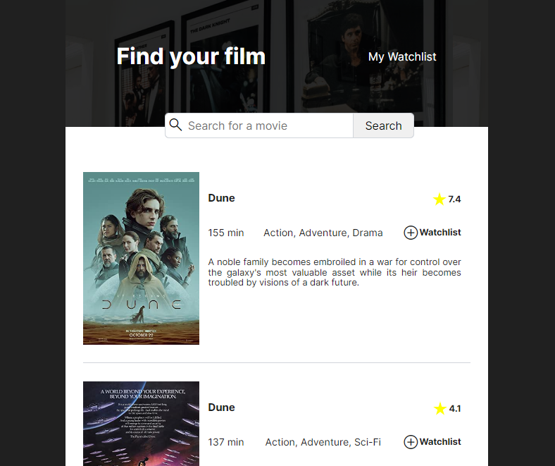

SZCSNY
<frontend>
Create your own Watchlist
This project was a solo project at Scrimba. This meant that I only had the Figma and some description on how the app should function and from that I had to create the app basically from scratch. This was when I first learned about APIs and so this app uses the Open Movie Database API to find films.
While building this app I began to understand more about APIs, asynchronous functions and the local storage and how an app is actually built in the 'wild'.
With this very simple app you can create your own watchlist. You can search for any movie in existence and add them to your Watchlist. If you have watched them, you can remove them easily. This data is saved on your local storage.
Movie Database